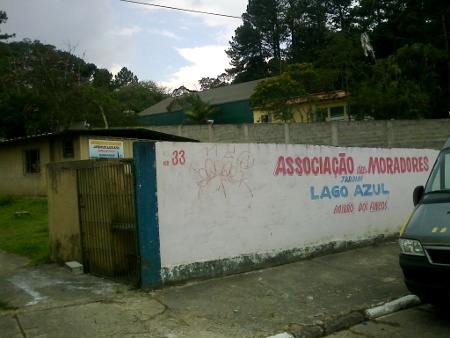
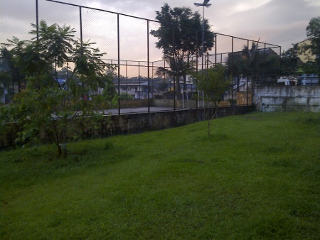

Blog
Abertura da Semana da Água no Lago Azul
Tudo começou assim
A Suzon Fuks postou na lista Bricolabs a chamada da semana da água, no final de 2013. Eu achei interessante, mas naquela época estava muito envolvida com outras demandas, e passou... Semanas depois, a Raquel Rennó, do PAEC-UFJF (grupo que colaboro) que organizou o Tropixel, encaminhou a mesma mensagem da Suzon em email privado pra mim. Dessa vez, com mais tempo para ler, achei que seria uma boa oportunidade para começar uma articulação em rede, com projetos internacionais para o Riacho e testar a minha hipótese da tese: o "co-manejo", ou manejo colaborativo, o manejo de escalas horizontais.
Pensei numa proposta bem simples, low-cost, baseada no que vivencio desde fevereiro de 2013, nas reuniões mensais da subprefeitura realizadas por Sergio Hora e Wagner Lino toda última segunda-feira do mês (agora vamos documentá-las nesse blog). Poderia ter articulado algo como a CIGAC, o Tropixel, ou Submidialogias - levando as pessoas das redes, da universidade, em larga escala para o Riacho. Mas acreditei que nesse primeiro momento seria mais viável trazer 2 ou 3 pessoas "de fora" para conversar com a população que "já estava articulada" e "já tinha muitas reivindicações" - AND se mostrava tão engajada nas reuniões de segunda-feira.
Em dezembro de 2013 tive a primeira conversa na subprefeitura que decidiu apoiar o evento. Assim, seguiram uma série de outras conversas e reuniões com secretarias e ONG's que aderiram e ofereceram apoio de divulgação e infraestruturas. Contudo, houve um erro de divulgação. Em janeiro eu enviei para o pessoal da "Promoção da cultura" a versão pré-alfa da programação. Lá a abertura seria no Clube dos Bancários. Mesmo, dias depois, passando a versão correta, indicando o Lago Azul não foi corrigido, pois era quase impossível fazer isso com todo material impresso... E, desse modo a informação foi amplamente divulgada...
Do Clube dos Bancários ao Lago Azul
A cerca de dois meses, em janeiro de 2014, começei a pesquisar possibilidades de articulação com a Secretaria de Gestão Ambiental para delinear com populações locais uma Política para Prestação de Serviços Ambientais. Assim, seria mais coerente ao invés de uma cerimônia cheia de formalidades, uma roda de conversa, linkando um nó de pessoas (org) com o poder público (gov). Isso era que eu pretendia na abertura. Não aconteceu. Talvez pela divulgação errada, ou pela não divulgação. Btw, não aconteceu.


Por conta de outras demandas Wagner Lino não conseguiu comparecer na abertura, o Secretário de Gestão Ambiental enviou Gabriela Priolli, com quem tenho conversado bastante sobre parcerias para o Riacho.
Porém, existe um hiato entre o que ouvi muitas vezes na reunião de segunda-feira e a realidade. O presidente da associação de bairro do Lago Azul - org que atualmente possui um terreno-sede não utilizado e também ocupa uma área que tinha sido escola de lata - disse que a população envolvida na associação tinha interesse em projetos e que havia uma carência enorme. A minha proposta: começar uma articulação, ou seja, você chama essas pessoas todas interessadas e eu chamo o .gov, com quem tenho conversado para delinearmos propostas de forma horizontal. Ok. isso pareceu bem claro.
Abrindo os trabalhos
Na minha perspectiva o que existe é uma certa esperança messiânica, de que o .gov possa mudar o contexto da vida de todomundo e consiga resolver universalmente os problemas do Riacho. Talvez, por isso as reuniões de segunda-feira lotem, para cobrar demandas e não para oferecer propostas. Infelizmente na cultura brasileira perdura o "apoio em forma de dinheiro" e não o apoio para realizações espontâneas que envolvam auto-organização e cooperação efetiva das partes envolvidas.
Na abertura, eu fiz uma breve apresentação sobre a semana da água, citei estrutruras como Bailux, Puraqué e até mesmo os containers do Pixelache (muito parecidas com o Lago Azul), e disse que o problema não é ter uma superproposta, mas sim vontade e desejo das pessoas (e falei um pouco do Baixo Centro).


Gabriela trouxe as atividades que estão sendo feito nas áreas de manancial. E depois abrimos uma conversa sobre o que poderíamos fazer juntos - em alguns momentos essa conversa quase virou uma discussão e uma cobrança por assuntos difusos, como por exemplo, a poluição do Rio Tietê.
Resultado do Processo 1 de 1
Tenho trabalhado com processos colaborativos faz um tempo. Nem sempre as pessoas, que dizem se envolver amplamente em tudo, participam na hora. Por isso que o ativismo de sofá funciona tanto, pois com um clique você resolve tudo. Em um lugar como o Riacho a presença se torna essencial e isso envolve a participação sem escalas. Ou seja, entender as pessoas (das secretarias, a polícia, o agricultor, o pesquisador) como a si mesmo, como "um ser" que pode dar uma parte do todo que você precisa.
Sei que é um exercício complexo. Pensei que no Riacho estávamos uns passos a frente dessa questão.
Acho que outra coisa que incomoda um tanto é as pessoas (todas elas) não entenderem muito bem "quem é a semana da água". A tal da necessidade de institucionalização. Soa estranho ter um evento de "todomundo". No material oficial saiu que era da Water Wheel, como ONG - MAS a Water Wheel como ONG nem existe, é apenas uma TAZ, uma plataforma que é "eterna enquanto durar". Na entrevista da rádio Milícia, por exemplo, acharam estranho divulgar o domínio http://nebl.in/a. Também já citaram ser uma organização da Iniciativa Verde, da UFABC, e da própria prefeitura de SBC. Não é. Isso gera estranhamento, essa coisa de ser de muita gente, mas também não ser de ninguém. Tudo isso está documentado aqui, no clipping.
Hoje, terça-feira, vamos para Aldeia SoS. Vamos esperar o que teremos por lá.
Comentários
Metarecicleirxs
A ausência do conceito de propriedade, de autoridade, gera conflitos que provavelmente chegam a fundir o cérebro de algumas pessoas.
Para mim é absolutamente óbvio a ilustração da representatividade, e não é só o caso que me incomoda, me irrita muito isto não ser óbvio para todo mundo.
Segundo a minha intepretação, quando alguém em algum lugar está apresentando, mencionando, discorrendo sobre, ou de qualquer falando sobre uma ideia ou um projeto, esta pessoa necessariamente está representando com alguma propriedade aquela ideia ou projeto.
Porque é que as pessoas têm esta mania de querer saber quem lidera / representa / faz a frente / caracteriza / etc. esta ideia / projeto, isto está além da minha compreensão. Porque é que não é óbvio para todo mundo que x interlocutorx já faz o papel de representatividade enquanto fala?
Porque é que eu devo considerar racional quando alguém interrompe uma fala representativa para perguntar aonde está a representação? Seria mais honesto então dizer "eu acho que tu, interlocutorx, não representa isto que tu está apresentando, não reconheço a tua propriedade para falar disto".
Mas em relação a isto eu tenho uma opinião. Eu entendo que só tem propriedade para questionar a representatividade de alguma pessoa quem sente que também tem representatividade sobre aquele mesmo assunto. Se tu não viu com teus olhos, não ouviu com teus ouvidos, não use a tua boca para falar do que tu não sabe. E como é que tu vai questionar a propriedade de alguém se tu mesmo não estava lá para ver e estabelecer um contraponto?
Quem quer que levante a bandeira da metareciclagem e bata de frente com as convenções engessadas que aí estão, me representa e não precisa da minha avaliação por escrito para se declarar metarec. De fato, se as circunstâncias não permitem ou não é conveniente usar a bandeira da metareciclagem propriamente dita, que se utilizem outros termos, outros meios.
Que se fale em inglês com os ingleses, em francês com os franceses, em guarani com os guaranis, quem é metarec tem o ouvido treinado pra identificar metareciclagem em qualquer idioma ou forma de expressão.
Como diria Mano Brown, "só quem é vai sentir".
Eu direi no entanto: Quem é vai sentir, quem não é, quem é e não admite, quem quer e quem não quer ser, quem foi e quem será também vão sentir, pô.